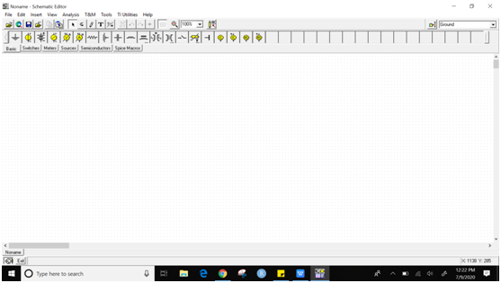
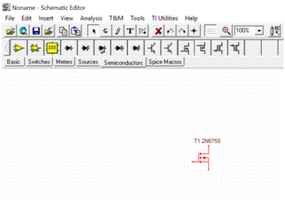
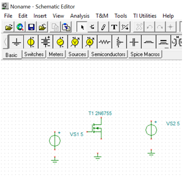
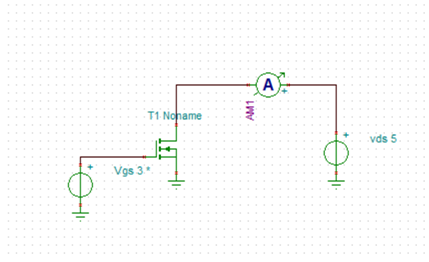
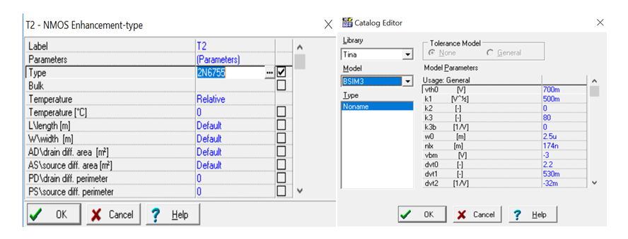
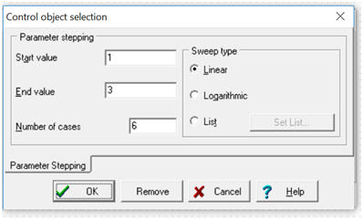
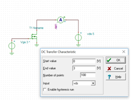
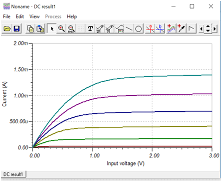

Lab-10
Determination of MOS transistor characteristics using SPICE Simulation
(TINA)
Software Required:
1. TINA-9.2 (can be downloaded freely)
2. PC in Windows Platform
Procedure:
1. Click on TINA-TI icon on desktop. The
following Screen will appear.

2.Drag all component into the workspace.
Go to “Semiconductors” tab, click on NMOS Enhancement type and place
it in the design space (the white portion with grid).

3. Add other components required to
complete circuit such as under Basic tab, place Ground, Voltage source
etc.

4. Place your mouse cursor at the terminal
of any component and automatically WIRE will appear, Click it to connect
wire and design the circuit as per the diagram given below. You need to
place one Ammeter also to display current reading. Ammeter is available
from Meters tab. Make sure that all components are properly connected and
no extra wire left in the design workspace. For wrong connection, delete
the wire and reconnect.

5. When your circuit is ready as per the
diagram mentioned above, now some extra configuration steps needs to be
done. Double click on MOSFET and go to the property list TYPE where
2Nxxxxx is mentioned. Click on the (…) to get additional property. In
catalog Editor, Under Model tab, change it to BSIM-3 and press OK.. This
is required to incorporate properties of short channel MOSFETs used for
VLSI circuit. Then again click on MOSFET and search for W/width and
L/length tab. Set it to 1u and 500n respectively. It indicates, Width=1
micron and Length=500nm. You can take different value of W and L and can
observe what is the change in result.

6. From Analysis menu, click on “Set
control object”, and see your mouse pointer icon is changed. In this form,
click on left side voltage source which is connected to gate terminal of
MOSFET. Under Voltage , click on (…) and the window will appear shown
below. Set the parameter as displayed. It indicates that the simulation
will be performed for each gate voltage starting from 1V to 3V with 10
different value. Click on OK.

7. Again go to “Analysis-> DC
Analysis-> DC transfer characteristics” and set the parameter as shown
in figure below. Make sure that the Input is selected to the voltage
source connected to drain terminal I.e. VDS. In your case, name may be
different. You can rename the voltage source if required by clicking a
component in circuit. In this case, the simulation will be performed for
VDS starting from 0V to 3V with 500 different value and remember, each
simulation will be performed for a single value of gate voltage as
configured in the previous step. Click on OK and if circuit and connection
, simulation setting is correct then waveform will appear as shown below.

Since we mention 6 step in gate voltage,
total six graph appear in result. This type of variation is called DC
nested sweep.

You can take different W and L in MOSFET property and verify the result.